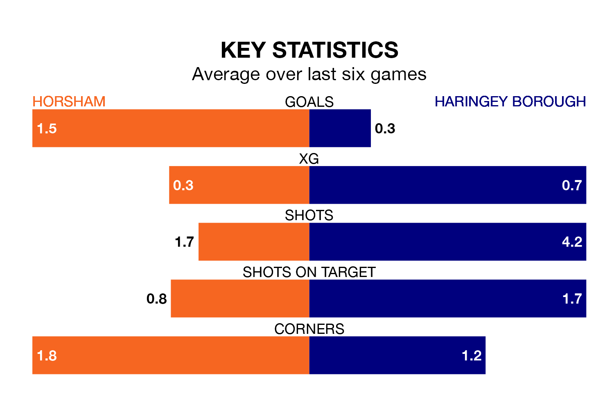

Horsham are heavy favourites to keep all three points at home in Tuesday's late kick-off against Haringey Borough.
Horsham, who sit 10th in the Isthmian Premier Division with 25 games played, are priced at 1.3 to seal victory.
Sitting 11 places and 25 points behind them in the table, Haringey are 7.0 to win with *Betting Company*, while the draw is at 4.3.
Horsham are in reasonable form in the Isthmian Premier Division, with three wins and three draws from their last six games.
With no wins and three draws over that period, Haringey's form is much worse – they have taken three points from 18, compared to the hosts' 12.
In the last 10 years, Horsham and Haringey have played each other on eight occasions. Horsham won four of them, Haringey three, and they drew once.
On average, Horsham scored 1.6 goals and Haringey 1.5 in those matches.
Their last meeting was on August 19, when Horsham won 2-0 away.
With 25 goals in 29 games so far this season, Borough are the league's second-lowest scorers with 0.9 goals per game. And they are conceding more than average, letting in 55 goals at a rate of 1.9 per game.
Horsham are also below average scorers, with 1.3 goals per game, compared to a league average of 1.6. They have conceded 1.1 goals per game.
Horsham's last match was on Saturday, a 1-1 draw against Wingate and Finchley.
Haringey drew 1-1 with Whitehawk last time out, also on Saturday, with on the scoresheet.
Updated: 09:02 (UTC), 13/02/24